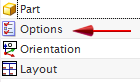
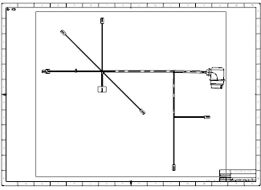

Add the formboard view to a drawing sheet
-
Start the Drafting application.
A blank drawing sheet is started for you.
-
In the Title Block warning message, 点击确定。
-
In the Populate Title Block dialog box, click Close.
-
In the View Creation Wizard dialog box, from the Task Navigator window, select Options.

Note
The Drafting Welcome Page may interrupt the View Creation Wizard. If that happens, close the welcome page, and then on the Drawing toolbar, from the Add View Drop–down list, select View Creation Wizard
 , and then select Options.
, and then select Options.
-
On the Options pane, make sure:
View Boundary
=
Automatic
-
Click Next to advance to the Orientation page.
-
From the Model Views list, select Top.
-
Click Finish.

Sheet “Sheet 1” Work -
Save but do not close your part as you will continue working on it in the next activity.